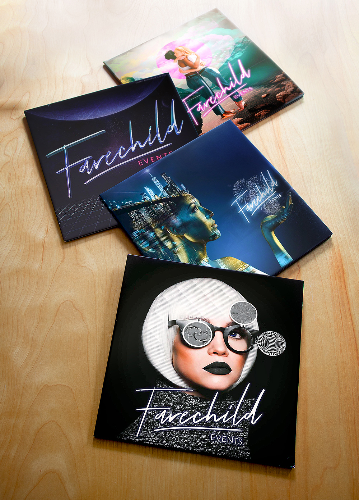
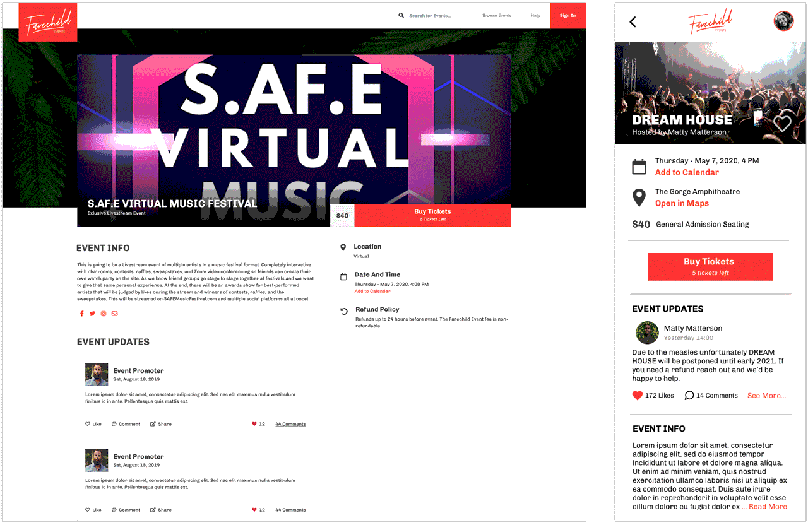
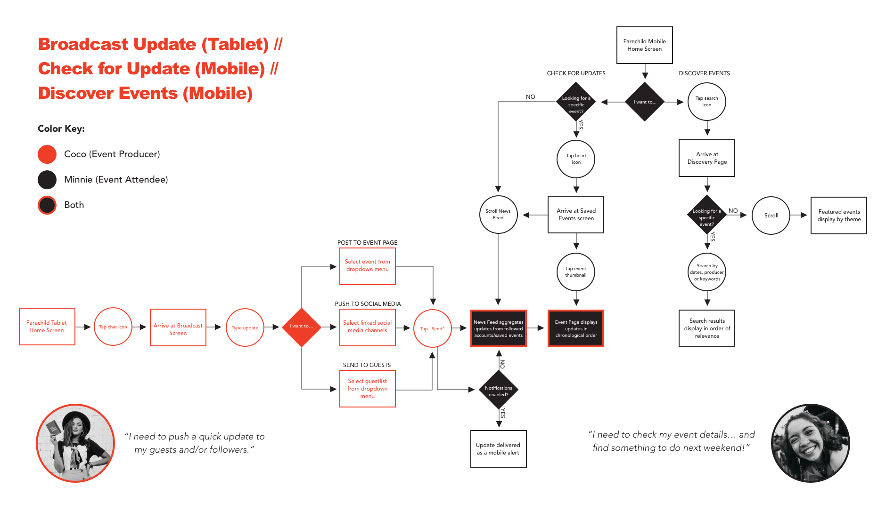
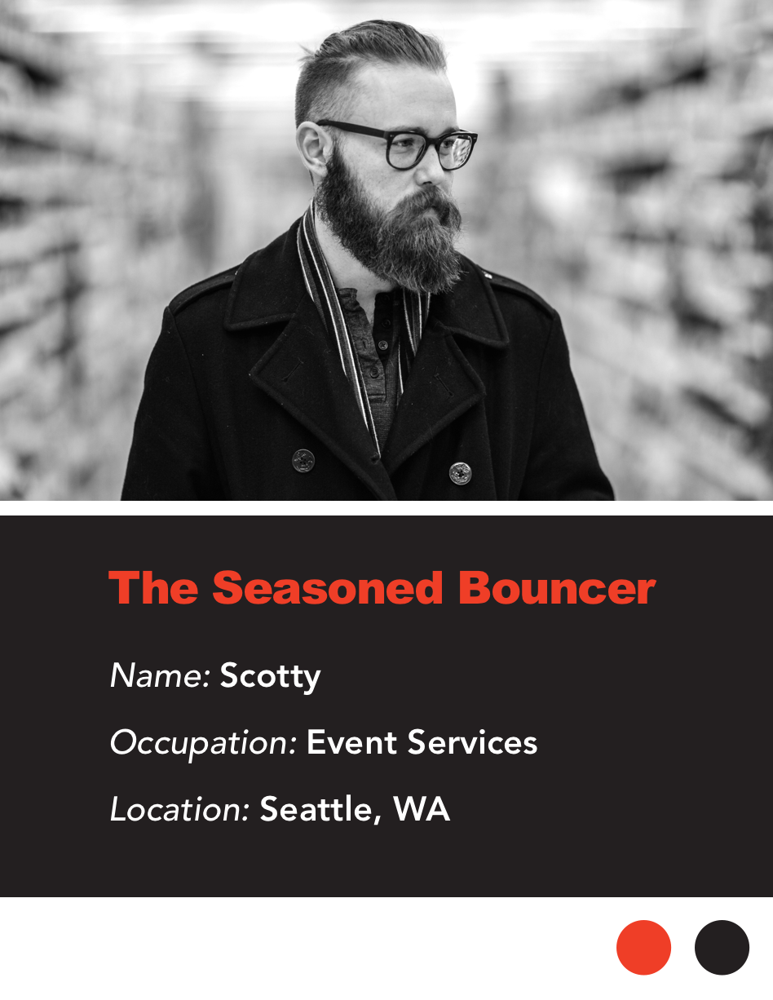
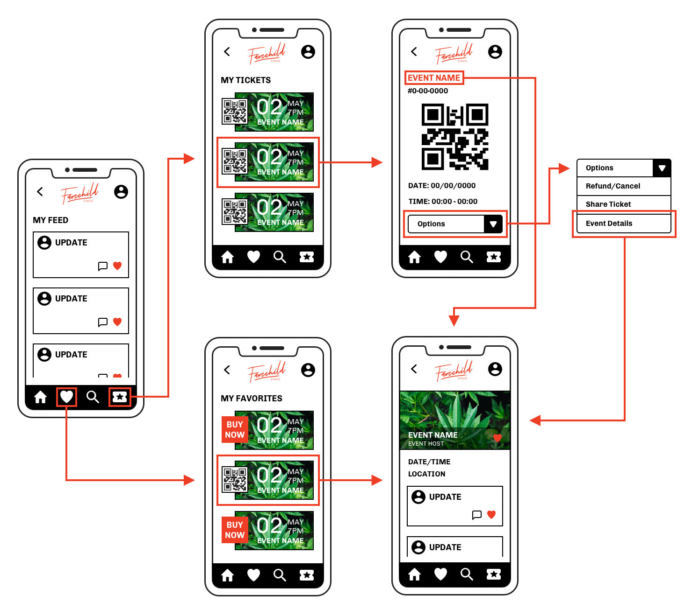

About the Client
Farechild is an event production company with personality, based in Seattle WA.
Spotting a gap in the market, Farechild's founders decided to launch their own mobile ticketing platform to support creators of cannabis friendly events.
They enlisted my student team at General Assembly for a ~2 week sprint to jumpstart the product design.
This is a...
Native App Concept
Timeframe
16 Days
My Role
IxD, Research
My Team
Max Davis
Alyssa Poulsen
The Problem
Mainstream ticketing giant EventBrite currently prohibits transactions for "restricted goods," including recreational cannabis, in their terms of service. Even in states where weed is legal, event organizers can't use the platform to charge admission for events where it will be consumed. Our clients are creating an alternative app to meet a growing need for mobile ticketing without the red tape.

Farechild is a platform for free thinkers
High Level Goals
- Design and test core features for ticketing and event management.
- Research and pitch next steps for Farechild to develop a "sticky" product and encourage community building on their platform.
Questions & Challenges
- One app, or two? How do we best meet the needs of two user groups on opposite sides of the ticket transaction?
- Leverage device hardware: How might we utilize cameras, location services, and push notifications?
We are not...
- Reinventing the wheel Our clients encouraged us to study their direct competitors for basic functionality, and improve the UX from there.
- Designing a payment flow Our clients are still working out the logistics of credit card processing for cannabis friendly events.
Two Profiles, One App?
Farechild has already identified two core users for their product: event producers and event attendees. They tasked my team with exploring the potential for overlap between these two groups, and the pros/cons of bundling utilities for them both into a single app. (Separate apps would mirror Farechild's direct competitor, Eventbrite.)
Is the best solution a hybrid dashboard for producers who also attend events? Or discrete apps for event management and event attendance? In order to answer these questions, my team evaluated existing platforms (Eventbrite, TicketMaster, BandsInTown, MeetUp), and conducted exploratory research with both user groups.
Attendee Survey Themes
The purpose of our survey was to establish a baseline: What makes for a good time vs. a bad time? How does technology factor in? My teammate Max crafted a 10 question survey, completed by 25 participants who had attended a live event within the past year.
- Seeking information: Regular updates preceding an event was of high importance to survey respondents. 60% reported that the app/website they booked through is first place they'd check for updates. 30% would check their email first.
- Craving clarity: Feelings of confusion/delay were the most memorable pain points for survey respondents. Bottlenecks at the door, oversold seating sections, and interminable wait times tarnished their experience at the event.
- Making memories: Of the respondents who took pictures at an event, 32% reported that they were motivated to post on social media, and 64% reported that they were motivated to document the experience for themselves to reminisce later.
Producer Interview Themes
The folks at Farechild helped to connect us with professionals from the events/entertainment industry. My teammate Alyssa and I conducted three first-person interviews to gather opinions, preferences, and domain knowledge.
- Targeted communication: Event producers rely on multiple channels to connect with their guests in a personalized way (email newsletters, texts, social media). Consistent communication grows their audience, and establishes brand credibility.
- Organizational tools: All three producers emphasized the importance of tools like calendars, list builders, and note keeping systems. Device wise, all three producers stated that they prefer tablet screens over smartphones for running events.
- Building community: In the events/entertainment industry, personal connections are everything. Cultivating a network and learning people's preferences is good for business.
Personas One & Two
Based on qualitative data and participant demographics, my team created two personas to represent each of Farechild's core users. Minnie and Coco guided our design process, reflected Fairchild's unique brand, and strengthened the storytelling for our clients.
Technical Advantages of Two Apps
Producer interviews had uncovered zero demand for a blended attendance/management experience... but our sample size was very small. I approached the question from a technical perspective to confirm that two apps were the best course for Farechild. I used ride share companies as a model for comparison — Uber has always had standalone apps for drivers/passengers, while Lyft started out with a hybrid app before splitting it in 2017. (Plus their tech is more widely discussed online than Eventbrite's.)
Two Apps are...
- Smaller: Unused features waste valuable storage space on mobile devices. Bundling producer-level functionality into the app would needlessly impact performance for Farechild's largest user base: event attendees.
- Faster: Standalone apps will allow Farechild to develop and release new features for both user groups at a faster pace.
Uber
Uber Driver
Lyft
Lyft Driver

Eventbrite

Eventbrite Organizer
Making it Stick
Farechild's business plan is to stand apart from other ticketing platforms with a memorable brand and community-oriented app. A native app presents many opportunities to build community, but only if we can prolong engagement past what is typically a quick transaction.
Provide Value with "After states"
Toward this goal, Farechild's founders developed the concept of "after states" for their web platform as an incentive for users to stick around between ticket purchases. In essence: attendees can return to the app after their event has expired to access exclusive media galleries (populated by producers, hosted by Farechild) to remember their experience.

We adapted Farechild's existing "afterstate" screens from the web app to our mobile prototype
Novelty ≠ Stickiness
Our clients challenged us to leverage device hardware (particularly notifications) and come up with a unique/interactive feature to increase the mobile app's "stickiness." We brainstormed several ideas, attempting to really WOW our clients... but none of these highflown features fulfilled an existing need. We were chasing uniqueness at the expense of utility.
Returning to the user data, I observed complementary needs to inform and to be informed. Event goers like Minnie need to know what to expect before the big day, and are reassured by regular updates — Minnie will go where the information is. Producers like Coco need to promote events, broadcast updates, and connect with guests in a personalized way — Coco will go where her guests are.
We can prolong community engagement between transactions by providing a centralized information hub.

Nobody asked for jukeboxes or jumbotrons... and survey fatigue is real
Notifications as Crowd Control
In addition to pre-event and post-event reminders, notifications can be used to broadcast updates to guests in real time. When we presented this idea to our clients, they immediately saw the value — particularly for unforeseen venue circumstances (a blocked exit, out-of-order restroom, food shortage, etc). With this feature, organizers can broadcast sweeping announcements mid-event without interrupting the mood.

(Proto) Persona Number Three
As I made user flows for each task we planned to test with the mobile and tablet prototypes, I noticed we were missing a third user for the product — event staff. This revelation came later in our sprint than I would've liked, but I squeezed in one quick interview with a volunteer who worked in admissions for film festivals. Based on their insights, I drafted an ad-hoc persona named Scotty to represent event staff in our designs.


Scotty's Goals
Prevent Bottlenecks: In order to keep the line moving and minimize errors, Scotty needs a check-in flow with as few steps as possible and zero lag time.
Resolve Conflict: Booking mistakes happen. Scotty needs easy access to lists and receipts in order to quickly and courteously diffuse disputes at the door.
Prototype Testing
My team's primary goal was to provide our clients with a solid foundation to jumpstart their app development. My focus during usability tests was to validate core parts of the UI and IA. We conducted a mix of remote and in-person moderated sessions, with volunteers from our own social circles (in the interest of speed). Recruiting testers from the events/entertainment industry was a real challenge, but we were fortunate to have the same volunteer who inspired Scotty as a tablet tester for round two.
#Goals
- Intuitive Navigation: Users are able to orient themselves within the app and complete routine tasks with no errors. We tracked the number of detours/missteps our testers made during routine tasks for each iteration.
- Minimal Friction: Users are able to perform routine tasks quickly and confidently. We measured the amount of time users took to successfully complete routine tasks for each iteration.
- Look and Feel: Users are delighted by the app's features and unique branding. This metric is hard to quantify, so I chose to conduct a SUS survey during the last round of mobile testing — to get some numbers on it for our clients.
Tablet Round 1
Thumbnails & Icons
Tablet navigation, round 1
Tablet navigation, round 2
3/3 Testers hesitated between the ticket icon and the QR icon when prompted to "check in a guest at the door." We changed the QR icon to a scanner bar for a stronger distinction between the two, and added text labels under all icons for clarity.
2/3 Testers successfully completed the task when prompted to broadcast an update. However, we observed in all cases that testers tried tapping event thumbnails on the dashboard first, not the chat bubble icon. We linked to the broadcast screen from individual event pages in our next iteration.
Tablet Round 2
Anticipating & Preventing Errors
3/3 Testers completed all tasks swiftly and successfully. However, "Scotty" clocked several design pitfalls, and made the following recommendations...
Broadcast Update:
- Nix the dropdown menu on the global update screen, provide event-specific thumbnails instead. Choosing among image thumbnails is faster/more accurate for users who are managing multiple events.
- Add a "review message" screen to the update flow to help users catch typos before they publish.
- Add an email option for updates. If guests don't have notifications enabled, they'll likely miss the memo.
Check In Guest:
- The "scan" button on the camera screen is misplaced. Wait for the app to confirm scans to ensure accuracy.
- Technology fails. Add an option to manually type confirmation numbers if the device camera isn't working.

Hidden Potential: The Digital Ticket Stub
During mobile tests, we observed a pattern of testers bypassing app navigation and looking for clues on their ticket stubs. When prompted to check for updates or contact customer support, they went first to purchased tickets — expecting to find links there.
It was exciting to unlock a simple mental model that could dramatically improve the app's information architecture!
We added secondary navigation elements to the ticket screens in our third iteration, which improved task completion metrics, and likely contributed to the mobile app's respectable SUS score.

Mobile Round 1
Icons & Taxonomy
3/3 Testers were already familiar with QR check-in. They completed our "check-in at the door" task with zero errors in a matter of seconds.
2/3 Testers could not distinguish between “saved events" and "purchased tickets," resulting in failure to complete the task. We renamed the section "favorites" to avoid confusion.
Mobile Round 2
Ticket IA
2/4 Testers tried the ticket wallet first when prompted to check for updates.
3/4 Testers tried the ticket wallet first when prompted to resolve an issue.
Across tests, observed that navigation icons were not universally understood by testers, so we added text labels to the navigation bar.
Mobile Round 3
SUS Score
9/9 Testers completed these tasks successfully, for a SUS score of 85.5:
- Check in at the door
- Check the status of an event you're attending
- Purchase tickets to an event you're thinking of attending
- Resolve an issue with your purchased ticket


Nothing but love for Team Farechild <3
Closing Thoughts
This project took place in May of 2020. At the time, we were just beginning to understand that it would be a devastating year for the entertainment industry. We did our best to proceed with empathy toward our clients, and the event producers we interviewed — all small business owners facing real hardship.
I'm extremely grateful for my hardworking team, our rad clients, and the generous volunteers who shared their insights during uncertain times.
Next Steps & Life Lessons
Measuring Stickiness: I hypothesized that providing a centralized information hub will prolong community engagement between ticket transactions, but this is impossible to measure without a real product/real users. In order to test my hypothesis, we would also need to establish a shared definition of 'prolonged,' and decide what types of engagement to count.
Since event discovery is a core function of the mobile app, should we count searching and favoriting as proof of extra activity? Or only visits to the newsfeed and event after states? Once parameters are established, Farechild can track metrics such as: number of page visits, time spent on certain pages, and the number of likes/comments on producer generated content.
On-site Observation: Dealing in hypotheticals limited the scope of our research/discovery for this project. In a normal year we could have studied people's actual behavior by attending a live event, this year we relied on self-reporting. Field studies will be a crucial next step toward improving both apps.
In terms of app usability, remote tests worked fine for validating basic functionality. However, we had no way to test interactions between devices running separate producer/attendee apps. Next steps (for the tablet app especially) would require contextual inquiry — ideally shadowing staff as they facilitate a live event.
Question Assumptions: Farechild brought my team in to design the native app(s) after they'd already built most of their browser-based ticketing platform. This gave us a head start in some areas (visual design, branding), but it also caused us to frame our research around known users of the web app.
Minnie can book tickets from her laptop, and Coco can manage events online, but Scotty has little use for the web app — he's only a core user on event days. If we had taken a step back to run some scenarios before charging ahead with the two profiles our clients supplied, we could've found Scotty at the beginning of the process, and designed the tablet app with event staff in mind.